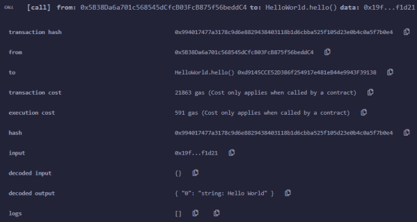

Hello World
Hello World:
https://github.com/cclabsInc/BlockChainExploitation/blob/master/2020_BlockchainFreeCourse/helloworld.sol
pragma solidity 0.6.6;
contract HelloWorld {
constructor() public payable {
//This is a comment
//You can put whatever you want in here to configure the contract during deployment
}
function hello() public pure returns (string memory) {
return "Hello World";
}
}
contractcontract HelloWorld →
contract is similar to creating a class in any other language. It’s a
block of associated code that can be inherited, or interfaced with and contains its own variables and
methods
constructorconstructor () public payable → The
constructor is run one time at contract creation and used to setup any
variables or details of the smart contract. This is often used for creating an administrator of the contract or
other items that are needed prior to contract usage.
Solidity visibility types ◇
Public → This allows anyone to call and use this function
◇ Private → This allows only the current contract
and its functions to call it directly.
◇ Internal → This is similar to private except it also allows derived
contracts to use its functionality
◇ External → External can only be called externally by other contracts
unless the “this” keyword is used with the function call.
function types•
payable:
◇ function → allow to receive ether while being called
◇ constructor → we can send a base
amount of Ether to the contract when its deployed. This will add an initial monetary liquidity for whatever
functionality the contract is providing. For example, if this were a gambling game, we would need some initial
Ethereum to payout our winners before our revenues catch up with our payouts and we start collecting large sums of
failed gambling revenue.
• returns → is simply the way the function denotes that it will return a value to the
user
• view → this type of function does not modify or change the state of the contract but may return values
and use global variables.
• pure → a pure function is a function which is completely self-contained in that
does not access other variables that are external of the function and it does not change the state of the smart
contract
Execute function Hello()After we haave deployed the file, we can execute
the function. This is the result
 ◇
CALL → In solidity there are call and send transactions. The difference between the two is whether they change the
state of the blockchain or not. In this case we did not change the state, we only retrieved information so a CALL
was issued. If we were changing variables and sending values then a SEND transaction would have been issued
instead.
◇ From → address which should correspond with the address you used to call the transaction.
◇
To → field should be the address the smart contract was given when you deployed the smart contract. You can view
this on your deployment screen next to the deployed contract name by hitting the copy button and pasting it
somewhere to see the full value.
◇ Transaction cost & Execution cost → You will then see the costs and gas
associated with the transaction. Costs change based on the size of the contracts and the assembly code created by
the compiler. Each instruction has a cost. We will cover that later when we do a bit of debugging and decompiling.
◇ Decoded Output → in this scenarion contains the return string “Hello World”